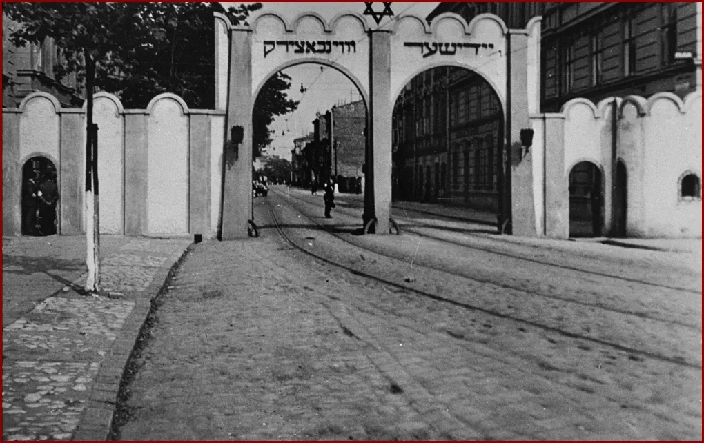
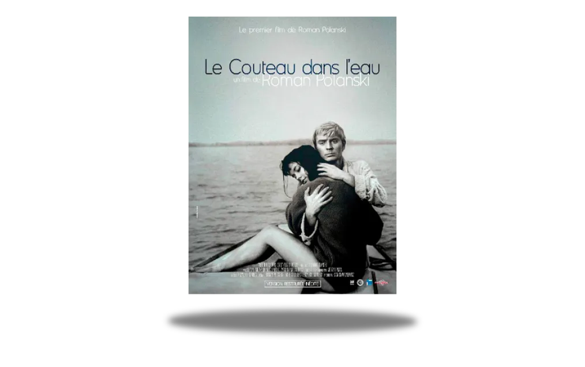
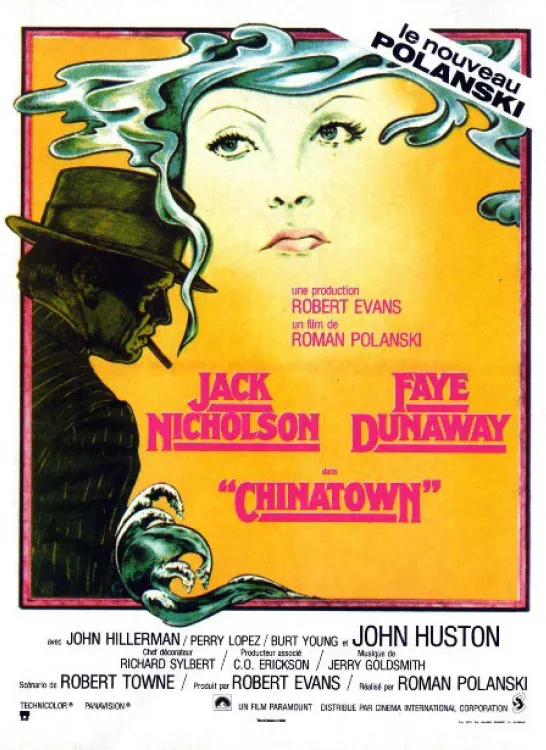

Roman Polanski, a Franco-Polish director, marked by the persecution of Jews during the war. The Pianist, his most
his most intimate film.
Roman Polanski, a director of genius and scandal
Roman Polanski is a Polish-French film director, producer, screenwriter and actor, born in Paris on August 18, 1933. He
is considered
considered one of the most important and controversial filmmakers of his time, having produced
genres, from thrillers and historical dramas to black comedies and horror films.
"Roman Polanski in Poland"01/2015 (EPA/MAXPPP)
Biography
Roman Polanski is a Franco-Polish filmmaker who lived through the horrors of the Second World War, success and glory,
but also scandal and exile.
but also scandal and exile.
"Roman Polanski at the time of his arrest" 1977
His life and work are marked by themes of violence, madness, sex and death.
Born in Paris in 1933, he moved to Poland with his Jewish parents in 1937. He survives the Krakow ghetto and his
mother's
deportation to Auschwitz. He took refuge in art and cinema, making his first short films at the
school in Łódź.

Cracovie Ghetto
He made his name with Le Couteau dans l'eau (1962), which earned him an Oscar nomination. He left for
England, then the United States, where he made such cult films as Repulsion (1965), Rosemary's Baby (1968) and
Chinatown (1974).

He also experienced personal tragedy when his wife Sharon Tate was murdered by Charles Manson's cult in 1969. He
was charged with rape of a minor in 1977 and fled to France to escape American justice.
He continued to make films in Europe, some inspired by his own story, such as Tess (1979),
adapted from his late wife's favorite novel, or The Pianist (2002), about a Jewish musician who escapes from the
the Nazis in Warsaw. This film won him the Palme d'Or at Cannes and three Oscars.
He currently lives with his third wife Emmanuelle Seigner and their two children. He is still being prosecuted by the
United States and was arrested in Switzerland in 2009, before being released in 2010.
Filmography
"Le couteau dans l'eau" 1962
"Le bal des vampires" 1967
"Rosemary Baby" 1968

"Chinatown" 1974
"Le Pianiste" 2002
These are works in the same genre as Roman Polanski's The Pianist.